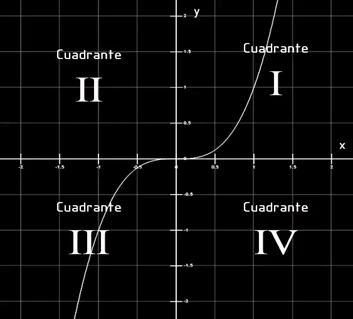
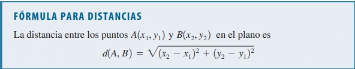
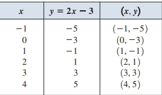
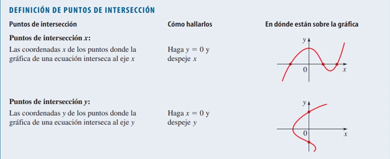

El Plano Coordinado
En la misma forma en que los puntos sobre una recta pueden ser identificados con números reales para formar la recta coordenada, los puntos en un plano se pueden identificar con pares ordenados de números para formar el plano coordenado o plano cartesiano. Para hacer esto, trazamos dos rectas reales perpendiculares que se cruzan en \(0\) en cada recta.
Por lo general, una recta es horizontal con dirección positiva a la derecha y se llama eje \(x\); la otra recta es vertical con dirección positiva hacia arriba y se denomina eje \(y\). El punto de intersección del eje \(x\) y el eje \(y\) es el origen \(O\), y los dos ejes dividen el plano en cuatro cuadrantes, marcados I, II, III y IV.
Fórmulas para la distancia y el punto medio:
Para determinar las coordenadas del punto medio entre dos puntos, usamos la fórmula del punto medio. Esta fórmula se deriva considerando que, las coordenadas en \(x\) del punto medio serán iguales a la suma de las coordenadas en \(x\) de los puntos dividida por \(2\), y las coordenadas en \(y\) del punto medio serán iguales a la suma de las coordenadas en \(y\) de los puntos dividida por \(2\).
Entonces, si tenemos los puntos \(A = (x_1, y_1)\) y \(B = (x_2, y_2)\), la fórmula del punto medio es:
\[\text{Punto Medio} = \left( \frac{x_1 + x_2}{2}, \frac{y_1 + y_2}{2} \right)\]

Video de ayuda
Gráficas de Ecuaciones con Dos Variables
La gráfica de una ecuación en \(x\) y \(y\) es el conjunto de todos los puntos \((x, y)\) del plano de coordenadas que satisface la ecuación.
Ejemplo:
Trace la gráfica de la ecuación \(2x - y = 3\).
Primero despejamos \(y\) de la ecuación dada para obtener:
\[ y = 2x - 3 \]
Esto nos ayuda a calcular las coordenadas \(y\) en la siguiente tabla:

Desde luego que hay un infinito de puntos y es imposible localizarlos todos, pero, cuantos más puntos localicemos, mejor podemos imaginar el aspecto de la gráfica representada por la ecuación.
Puntos de Intersección:
Las coordenadas \(x\) de los puntos donde una gráfica interseca al eje \(x\) reciben el nombre de puntos de intersección \(x\) de la gráfica y se obtienen al hacer \(y = 0\) en la ecuación de la gráfica.
Las coordenadas \(y\) de los puntos donde una gráfica interseca al eje \(y\) se denominan puntos de intersección \(y\) de la gráfica y se obtienen al hacer \(x = 0\) en la ecuación de la gráfica.
